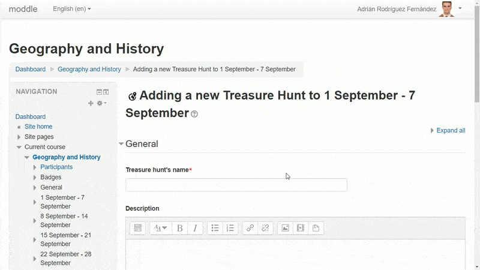
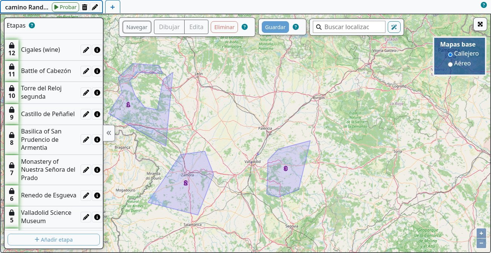
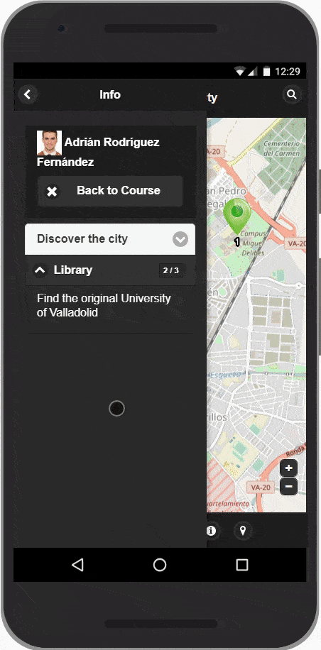

1. Planifica el recorrido de aprendizaje
Elige un tema, una zona y una duración razonable. Anota qué deben observar o hacer los estudiantes en cada parada. Decide si se moverán físicamente, marcarán lugares en un mapa o escanearán etiquetas QR. Empieza con un camino y dos o tres etapas; amplía después de probarlo.

2. Configura la actividad Moodle
- Activa la edición del curso y añade Treasure Hunt. Introduce un título corto y una descripción clara con lugar de salida, duración, seguridad y material necesario.
- Elige juego individual o por equipos. Para equipos, prepara antes grupos y agrupamientos; consulta la guía de equipos.
- Decide si hay que desplazarse o si se puede marcar una posición en el mapa. Revisa GPS, QR, ayudas, penalizaciones, calificación y almacenamiento de itinerarios.
- Guarda la actividad y abre el editor geográfico.

3. Crea un camino
Un camino es la secuencia ordenada de etapas que sigue un participante o equipo. Crea un camino común o varios para equipos y variantes. Nombra claramente cada camino. Selecciona su pestaña y añade las etapas desde el panel lateral. Un camino válido necesita al menos dos etapas con geometría.

4. Añade y describe etapas
- Selecciona un camino y pulsa Añadir etapa. Pon un nombre breve y útil.
- Escribe uno o ambos campos: Pista para la siguiente etapa o fin de caza y Pista para descubrir esta etapa. Al menos uno debe tener contenido. La pista de salida de la última etapa será el mensaje final.
- Usa el control de dibujo para crear un punto o área en el lugar del hallazgo. Selecciona primero la etapa. Edita vértices o borra y redibuja si es necesario.
- Opcionalmente añade pregunta, descubrimiento QR, restricciones de actividades o descubrimiento fuera de secuencia. Guarda y revisa la ficha resumen.


5. Entiende la prioridad de las pistas
La secuencia normal continúa por la primera etapa incompleta. Si su etapa anterior está completada y tiene una pista para la etapa siguiente, se muestra esa pista de salida. En caso contrario aparece la pista para descubrir esta etapa de la etapa objetivo, si existe. Una etapa habilitada fuera de secuencia puede añadir su propia pista cuando su predecesora aún no está completada. Las etapas ya resueltas se saltan al avanzar.
6. Valida y prueba
Revisa los avisos de las pestañas de caminos y etapas. Comprueba que cada etapa prevista tenga geometría y pista utilizables, y que los caminos por equipos tengan agrupamiento asignado. Usa Play en el camino o Probar desde la actividad como docente. Prueba un acierto y un fallo; después recorre todo con una cuenta de estudiante.

7. Sigue la actividad
La página de la actividad muestra el progreso por camino y secuencia. Revisa etapas resueltas, intentos, calificaciones e itinerarios si están activados. El visor de rastreo permite inspeccionar movimientos; borra secuencias o caminos solo cuando quieras iniciar una nueva partida.